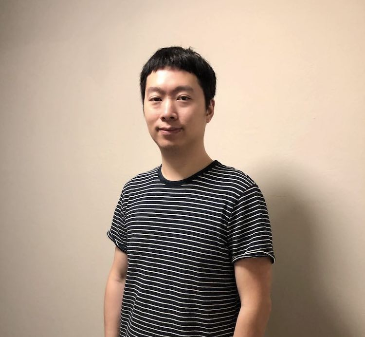

|  | Jitong Chen (陈纪同)Email: jitongc@gmail.com |
|
|
I received my Ph.D. in Computer Science and Engineering from The Ohio State University in 2017. I worked with Professor DeLiang Wang in Perception and Neurodynamics Laboratory. My PhD research focused on data-driven speech separation in adverse environments. I am currently interested in speech synthesis, music understanding/generation, and music creation tools. |
|
September 2018 ~ present: Research Manager, Audio/Speech/Music Understanding and Generation, ByteDance AI Lab, Mountain View, CA June 2017 ~ August 2018: Research Scientist, End-to-End Speech Recognition and Speech Synthesis, Baidu SVAIL, Sunnyvale, CA May 2016 ~ August 2016: Research Intern, Speech and Language Algorithms, Google Research, New York, NY May 2015 ~ August 2015: Data Science Intern, Natural Language Processing, MetaMind, Palo Alto, CA |
|
Wei Ping, Kainan Peng, Jitong Chen: ClariNet: Parallel Wave Generation in End-to-End Text-to-Speech. [audio demos], ICLR, 2019. Sercan O. Arik, Jitong Chen, Kainan Peng, Wei Ping, and Yanqi Zhou: Neural Voice Cloning with a Few Samples. [audio demos], NIPS, 2018. DeLiang Wang and Jitong Chen: Supervised Speech Separation Based on Deep Learning: An Overview. IEEE/ACM Transactions on Audio, Speech, and Language Processing, 2018. Jitong Chen and DeLiang Wang: DNN Based Mask Estimation for Supervised Speech Separation. In: Shoji Makino (ed.), Audio Source Separation, Springer, 2018. Ke Tan, Jitong Chen, and DeLiang Wang: Gated Residual Networks with Dilated Convolutions for Monaural Speech Enhancement. IEEE/ACM Transactions on Audio, Speech, and Language Processing, 2018. Ke Tan, Jitong Chen, and DeLiang Wang: Gated Residual Networks with Dilated Convolutions for Supervised Speech Separation. ICASSP, 2018. Eric Battenberg, Jitong Chen, Rewon Child, Adam Coates, et al.: Exploring Neural Transducers for End-to-End Speech Recognition. ASRU, 2017. Jitong Chen: On Generalization of Supervised Speech Separation. Ph.D. Dissertation, The Ohio State University, 2017. Jitong Chen and DeLiang Wang: Long Short-Term Memory for Speaker Generalization in Supervised Speech Separation. Journal of the Acoustical Society of America, 2017. Jitong Chen and DeLiang Wang: Long Short-Term Memory for Speaker Generalization in Supervised Speech Separation. INTERSPEECH, 2016. Jitong Chen, Yuxuan Wang, Sarah Yoho, DeLiang Wang and Eric Healy: Large-Scale Training to Increase Speech Intelligibility for Hearing-Impaired Listeners in Novel Noises. Journal of the Acoustical Society of America, 2016. Jitong Chen, Yuxuan Wang, and DeLiang Wang: Noise Perturbation for Supervised Speech Separation. Speech Communication, 2016. Yuxuan Wang, Jitong Chen, and DeLiang Wang: Deep Neural Network Based Supervised Speech Segregation Generalizes to Novel Noises Through Large-Scale Training. Technical Report OSU-CISRC-3/15-TR02, 2015. Eric Healy, Sarah Yoho, Jitong Chen, Yuxuan Wang, and DeLiang Wang: An Algorithm to Increase Speech Intelligibility for Hearing-Impaired Listeners in Novel Segments of the Same Noise Type. Journal of the Acoustical Society of America, 2015. Jitong Chen, Yuxuan Wang, and DeLiang Wang: Noise Perturbation Improves Supervised Speech Separation. LVA/ICA, 2015. Jitong Chen, Yuxuan Wang, and DeLiang Wang: A Feature Study for Classification-Based Speech Separation at Low Signal-to-Noise Ratios. IEEE/ACM Transactions on Audio, Speech, and Language Processing, 2014. Jitong Chen, Yuxuan Wang, and DeLiang Wang: A Feature Study for Classification-Based Speech Separation at Very Low Signal-to-Noise Ratio. ICASSP, 2014. Jerome Vienne, Jitong Chen, Md. Wasi-Ur-Rahman, Nusrat S. Islam, Hari Subramoni, Dhabaleswar K. Panda: Performance Analysis and Evaluation of InfiniBand FDR and 40GigE RoCE on HPC and Cloud Computing Systems. HOTI, 2012. |
|
I am interested in astrophotography. Here are some pictures I have taken. Astrophotography Collection |